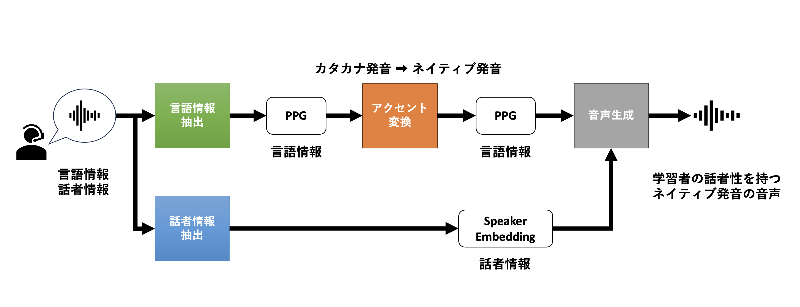
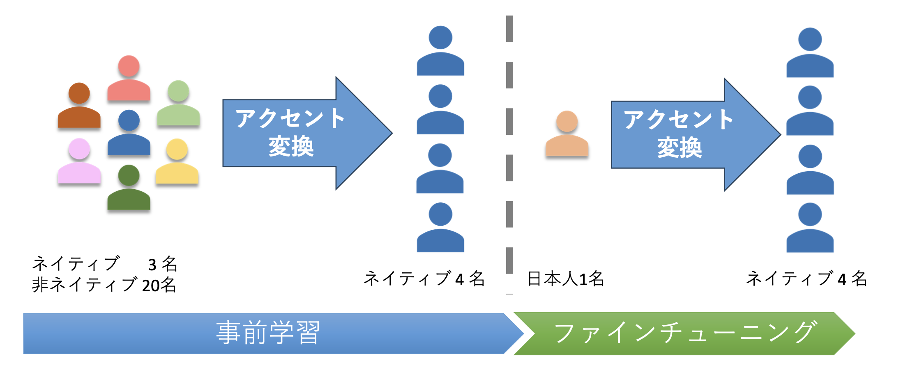

令和5年実施の全国学力調査の結果
⇒ 中学3年生の「話す」の正答率は12.4%, 6割の生徒が0点
人の話す音声は，話者情報・言語情報等が含まれる。ます、学習者の発話音声から言語情報のみを抽出する。このカタカナ発音で構成されてる言語情報をネイティブ発音を持つ言語情報へアクセント変換を行う。そして，話者情報を加え音声として出力することで学習者の話者性を持つお手本音声を生成する。以下に簡略化した音声生成プロセスを示す。
本研究ではアクセント変換に着目し研究を行った。その他の部分は既存の学習済みのモデルを用いて実験を行った。
先行研究ではアクセント変換を行うモデルはText to SpeechモデルであるTacotron2をベースとしたモデルであったが、本研究ではTransformerベースのモデルへ変更し実験を行った。
アラビア語・マンダリンを母国語として持つ非ネイティブ2名と日本語を母国語として持つ非ネイティブ2名による読み上げ音声を50文を用いて評価を行った。
| 母国語 | ファインチューニング前 | ファインチューニング後 |
|---|---|---|
| Arabic | 0.90 | 0.79 |
| Mandarin | 0.89 | 0.83 |
| Japanese(speaker1) | 0.63 | 0.81 |
| Japanese(speaker2) | 0.65 | 0.77 |
| Speaker | Text | Input Speech | Accent Converted Speech |
|---|---|---|---|
| Japanese(speaker1) | He stopped and Philip nodded at the horrified question in his eyes. | ||
| Japanese(speaker2) | He stopped and Philip nodded at the horrified question in his eyes. |
| Speaker | Text | Input Speech | Accent Converted Speech |
|---|---|---|---|
| Japanese(speaker1) | It seemed nearer to him since he had seen and talked with Gregson. | ||
| Japanese(speaker2) | It seemed nearer to him since he had seen and talked with Gregson. |
ファインチューニングに用いた日本語話者の発音と推論時の入力音声の発音が大きく異なる単語含まれると適切に推論できないと考えられる。
⇒ 学習データの発音と大きく異なる単語は未知語として扱われ、ノイズとなっている可能性がある。
⇒ 学習データに複数の日本人話者を含めることにより，様々なカタカナ発音のパターンを学習することで変換精度の向上が期待できる.。
この研究に取り組んだ動機は、日本の英語教育に疑問を抱いており、変革に繋がることに取り組みたいと考えていたからです。
18歳の夏にハワイでの語学留学を経験したことがきっかけで、日本の学生が受験のためだけに英語を学んでいる実態に問題意識を持つようになりました。 中学生から本格的に英語を学び始め、高校・大学でも英語を学んでいるのに全く話せるようにならない日本の英語教育はよくないと思うようになりました。
特に、言語を学ぶ上で基礎となる「発音」の指導が不十分であると感じていました。また、小学校の速い段階から英語教育を始め、文法や単語の詰め込むように英語教育改革がなされる昨今、本当にこれが正しいことなのか疑問を持っていました。
そのような現状を変えたいという想いから本研究に取り組みました。
研究ではDNNモデルの学習のためにGPUを使用して学習をする必要がありました。当初のモデルでは使用するメモリサイズが大きく研究環境では上手く学習が進まないという課題がありました。また一回の学習が１ヶ月ほど掛かるという課題がありました。
この問題を解決する方法を模索した結果、従来研究のモデルではなく、異なるモデルを参考・応用しネットワーク構造を変更することで学習する際に使用するメモリ量を少なくし解決しました。
その結果、学習時間は４日程度まで短縮し、うまく学習が進まなかった課題も解決できました。
11月末に大学コンソーシアム富山で開催された電子情報通信学会マルチメディア情報ハイディング・エンリッチメント研究会(EMM)、応用音響研究会(EA)および日本音響学会聴覚研究会(ASJ-H)の3研究会合同研究会においてEMM研究会優秀ポスター賞を受賞しました。
ポスター発表を通して、多角的な視点からの議論を行いました。その中で、「日本人にとってはネイティブ発音の習得は現実的ではない」という議論がありました。 英語はコミュニケーションを取るための道具であり、伝わる明瞭性の高い発音の習得が必要であることの気づきになりました。研究の目的・目標の見直しに繋がる有意義な議論ができたと感じています。
自分の取り組みを他者と共有・議論を行い多角的な視点を持つことが重要であることを学びました。 自分自身の研究として個人で完結していた研究を学会発表という場で様々な人と共有することで、これまでになかった視点から議論することができ、新たな方向性を見出せました。
研究だけに留まらず、私生活や今後の人生においても他者とコミュニケーションを図り共有することで、多角的な視点を持ち正解のない問いに向き合い、活かしていきたいと思います。